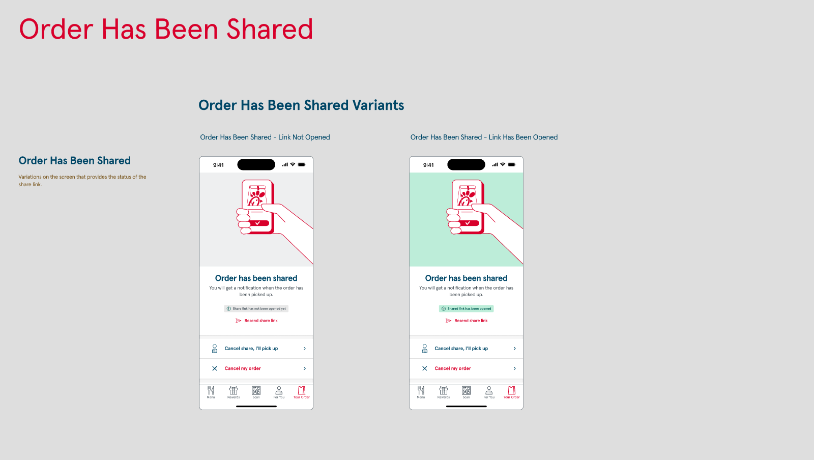
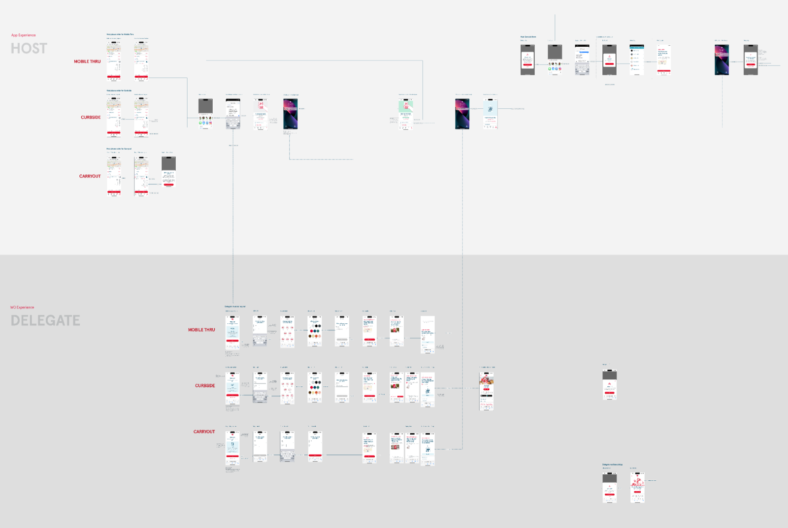
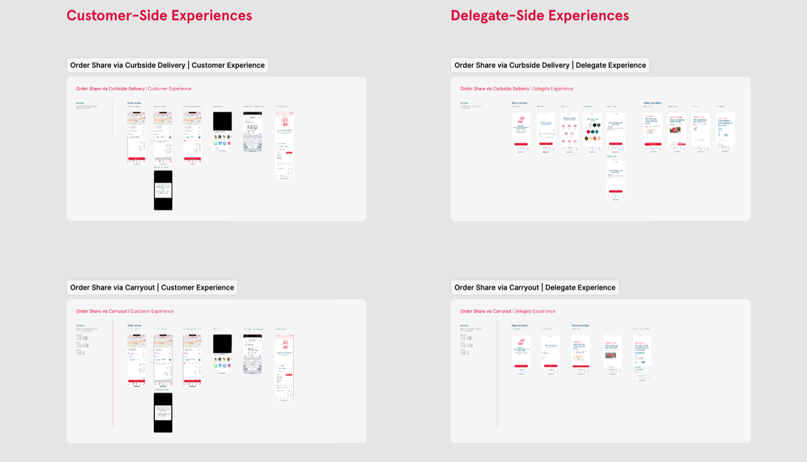
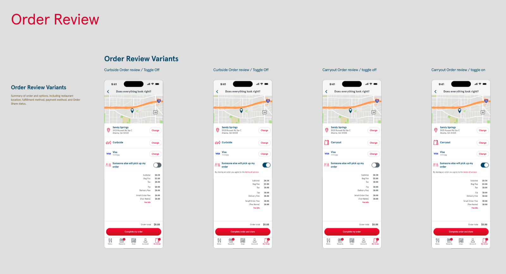
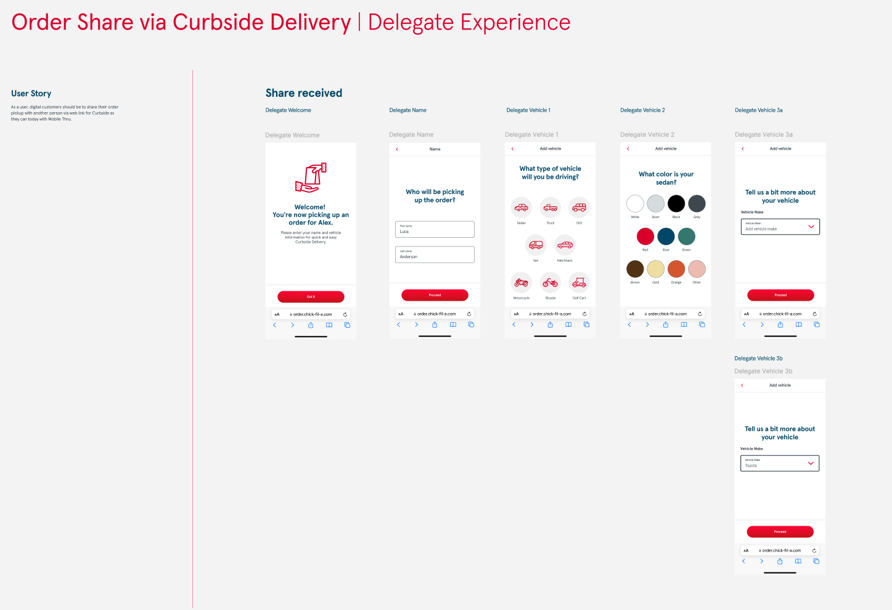

01 / Case Study — Consumer Mobile
Chick-fil-A
Order Share — a delegate-pickup feature for the Chick-fil-A app that tells the app (and the Team Member) exactly who’s collecting an order.
01 — Overview
The Chick-fil-A app is the front door to mobile ordering for more than 1.8 million people a week — but it had a blind spot: it assumed the person who placed an order was the person picking it up. In reality, people order for coworkers, family, and friends constantly.
I designed Order Share — a feature that lets a guest hand pickup off to someone else (a “Delegate”), and gives restaurant Team Members the information they need to get the right food to the right person.

02 — The Challenge
One order, two people, three pickup paths
Order fulfillment looks simple until you map it. A single order can be collected via mobile drive-thru, curbside, or in-restaurant — and each path has its own verification cues. When the person ordering and the person picking up are different, those cues break down: the app couldn’t tell them apart, which created confusion for guests and Team Members alike.
The task was to add delegation without adding friction, inside a mature app used at massive scale — where every new pattern has to fit cleanly with everything that’s already there.
03 — Approach
Design inside the system, for every path
I worked the problem end-to-end with product and the internal design team, treating the design system as a partner rather than a constraint.
- 1Mapped the existing journeys. Charted the current ordering and pickup flows and pinpointed exactly where verification differs across drive-thru, curbside, and in-store.
- 2Learned the design system cold. Studied Chick-fil-A’s robust Figma system — components, tokens, and variants — so the feature would extend it, not fight it.
- 3Designed the delegate handoff. A toggle in each pickup flow: light-touch name entry for the customer, expanded details for the delegate.
- 4Made confirmation consistent. Unified patterns for customers, delegates, and Team Members across app, mobile web, and desktop — annotated for the systems team.


04 — The Solution
A delegate prompt that fits every path
Order Share adds a delegate prompt to each pickup method, asking the right amount of information at the right moment — a name from the customer, a little more from the person collecting. Confirmation patterns stay consistent across user types and devices, so no one is left guessing.
To support it, I created new design-system component variants — modules, icons, and imagery — that other teams can reuse for future enhancements, so the feature strengthens the system it lives in.


05 — Impact
Less confusion, cleaner handoffs, a stronger system
Order Share made it easy for guests to delegate pickup responsibilities and gave Team Members the information they needed upfront — reducing identity confusion and streamlining handoffs across every pickup option.
0M+
Weekly users on the platform
0
Pickup paths supported — drive-thru, curbside, in-store
0+
Screens designed & annotated
06 — Reflection
Designing for fulfillment at this scale sharpened something I already believed: the most valuable UX is often invisible. Nobody screenshots a pickup flow for being beautiful — they just get the right food, handed to the right person, without thinking about it. Getting to “without thinking about it,” across three pickup paths and millions of weekly guests, was the whole job.